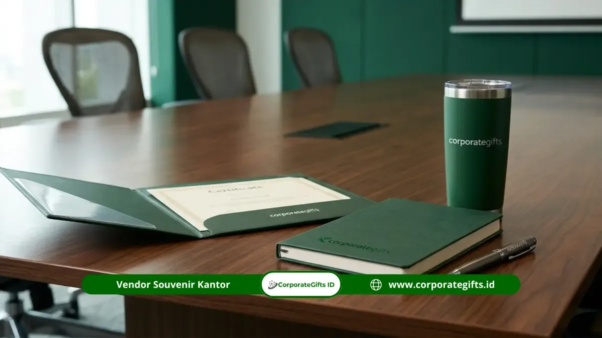

Poin Kunci Panduan Isi Seminar Kit:
- Fondasi 7 Item Wajib: Seminar kit standar fungsional memuat tas/tote bag, map folder, notebook catatan, pulpen, materi cetak/digital, sertifikat resmi, dan name tag tali lanyard.
- Rentang Anggaran Realistis: Estimasi biaya produksi paket standar berkisar Rp25.000 - Rp75.000 per peserta, sedangkan paket eksekutif korporat berkisar Rp150.000 - Rp350.000.
- Diferensiasi Material: Kualitas paket premium terletak pada upgrade bahan (kanvas tebal, notebook hardcover, pulpen metal) dan penambahan cinderamata seperti tumbler atau powerbank.
- Timeline Pengadaan Aman: Mulai koordinasi spesifikasi desain dan konfirmasi vendor minimal 3 hingga 4 minggu sebelum acara untuk mencegah kendala produksi mendadak.
- Relevansi Audiens: Kurasi isi kit harus diselaraskan secara proporsional dengan profil peserta, format durasi acara, dan identitas citra lembaga penyelenggara.
Corporate Gifts ID - Isi seminar kit standar terdiri dari 7 item wajib: tas atau tote bag, map dokumen, notebook, pulpen, materi seminar, sertifikat, dan name tag/lanyard, dengan estimasi biaya produksi umumnya berkisar antara Rp25.000 hingga Rp75.000 per peserta untuk paket standar, serta Rp150.000 hingga Rp350.000 untuk paket premium kustom.
Seminar kit bukan sekadar fasilitas pelengkap seremonial, melainkan representasi visual pertama yang disentuh oleh peserta saat menghadiri konferensi, simposium, maupun pelatihan instansi. Isi paket yang tersusun rapi membantu peserta berpartisipasi aktif selama sesi berlangsung, mencatat materi penting dengan nyaman, dan membawa pulang cinderamata fungsional yang bernilai jangka panjang bagi citra institusi Anda.
Bagi panitia pelaksana atau divisi pengadaan internal, memahami standar komponen isi seminar kit yang berlaku sangat fundamental agar tidak ada item esensial yang terlewat. Melalui panduan komprehensif ini, kami membedah secara rinci daftar 7 item wajib, komparasi spesifikasi standar vs premium, langkah perencanaan efisien, hingga tips menghindari kesalahan logistik yang kerap merugikan anggaran panitia.
Daftar Isi Artikel
- Komponen Utama: Apa Saja Isi Seminar Kit Standar?
- Perbandingan Spesifikasi: Seminar Kit Standar vs Premium
- Bagaimana Cara Menyusun Isi Seminar Kit yang Efektif?
- Apa Saja Kesalahan Umum dalam Menentukan Isi Seminar Kit?
- Kapan Isi Seminar Kit Perlu Disesuaikan dengan Jenis Acara?
- Rangkuman Praktis dan Langkah Lanjutan
- Pertanyaan Seputar Isi Seminar Kit (FAQ)
Komponen Utama: Apa Saja Isi Seminar Kit Standar?
Seminar kit standar memuat tas, map dokumen, notebook, pulpen, materi acara, sertifikat resmi, dan kartu identitas peserta. Ketujuh perlengkapan ini menjadi kebutuhan dasar paling mendasar yang memastikan kegiatan akademik, bimbingan teknis, maupun konferensi korporat berlangsung tertib.
Berikut adalah ulasan mendalam mengenai fungsi dan spesifikasi teknis dari 7 item wajib dalam paket seminar kit:
-
Tas atau Tote Bag Pelindung
Tas berfungsi sebagai wadah utama yang menyatukan seluruh komponen kit agar rapi dan tidak tercecer saat dibagikan di meja registrasi. Pada paket standar, material yang paling banyak digunakan adalah spunbond non-woven tebal (75 - 100 gsm) atau blacu polos ramah lingkungan. Tas ini biasanya dicetak sablon 1-2 warna memuat nama acara, tanggal kegiatan, dan logo sponsor. Di akhir acara, tas ini dibawa pulang peserta sebagai goodie bag serbaguna yang terus dipakai berulang kali. -
Map atau Folder Dokumen Resmi
Map dokumen menjaga lembaran penting seperti rundown acara, lembar kuisioner, tiket konsumsi, materi modul, hingga sertifikat agar tidak kusut atau terlipat. Pilihan standar umumnya memakai map duplex berlaminasi doff atau map plastik polimer transparan berkancing. Pada acara berskala besar, map cetak kustom dengan kantong selipan kartu nama dan pulpen di bagian dalamnya memberikan kesan yang jauh lebih rapi dan terorganisir. -
Buku Catatan atau Notebook A5
Meskipun teknologi digital kian marak, buku catatan fisik berukuran A5 tetap menjadi instrumen utama yang paling disukai peserta untuk mencatat intisari presentasi narasumber. Buku catatan standar umumnya memiliki 60 hingga 80 halaman kertas HVS bergaris dengan sampul art carton atau kraft paper estetik. Menambahkan kop nama instansi atau watermark tipis di setiap halaman akan memperkuat identitas brand secara konsisten. -
Pulpen Seminar Ergonomis
Pulpen bertinta hitam atau biru pekat dengan mata pena halus (0.5 - 0.7 mm) adalah instrumen wajib yang tidak boleh macet saat digunakan. Untuk pengadaan skala besar, pulpen plastik retractable dengan cetak pad print logo acara menjadi solusi paling efisien. Sementara pada paket yang lebih berkelas, penggunaan pulpen stylus metal grafir laser memberikan nilai fungsional ganda bagi pengguna ponsel pintar atau tablet. -
Materi atau Modul Pelatihan Terstruktur
Materi dapat berbentuk buku panduan, modul bimbingan teknis, lembar kerja interaktif, maupun printout slide materi narasumber yang dijilid spiral kawat. Jika seluruh materi didistribusikan secara paperless, panitia wajib menyertakan lembar panduan ringkas berisi kode QR dinamis yang langsung mengarah ke Google Drive atau portal materi resmi acara. -
Sertifikat Peserta Berlegalitas
Sertifikat merupakan dokumen berharga yang paling dinantikan peserta karena berfungsi sebagai bukti formal kehadiran, portofolio profesional, maupun angka kredit profesi (SKP). Sertifikat standar dicetak di atas kertas concord, linen, atau art paper tebal 230-260 gsm dengan tanda tangan pejabat berwenang dan stempel emboss kering untuk menjamin keaslian dokumen. -
Name Tag dan Tali Lanyard Terkustomisasi
Name tag mempermudah sesi networking antarperserta dan membantu panitia mengatur akses ruangan. Format standar terdiri dari kartu identitas berukuran B2/B3 di dalam wadah mika transparan, dipadukan dengan tali lanyard sablon atau printing sublimasi full color. Lanyard berdesain menarik sering kali disimpan dan dikoleksi oleh peserta pasca-acara selesai.
Perbandingan Spesifikasi: Seminar Kit Standar vs Premium
Seminar kit premium meningkatkan mutu material dasar setiap item serta menambahkan cinderamata berkelas seperti tumbler stainless, flashdisk OTG, atau wireless charger. Pemilihan antara format standar dan eksekutif sangat bergantung pada target audiens, profil jabatan peserta, dan anggaran yang dialokasikan oleh manajemen.
Berikut matriks komparasi spesifikasi detail antara paket standar ekonomis dan paket korporat premium dari CorporateGifts.ID:
| Item Perlengkapan | Paket Standar Ekonomis | Paket Premium Korporat |
|---|---|---|
| Tas / Wadah Utama | Non-woven spunbond tebal atau blacu katun polos sablon | Totebag kanvas tebal waterproof atau tas laptop kulit sintetis eksklusif |
| Map / Folder Dokumen | Map kertas duplex cetak 1-2 warna dengan selipan kartu | Map leatherette hardcover dengan jahitan tepi rapi dan magnet lock |
| Buku Catatan / Notebook | Buku catatan softcover A5, 60-80 halaman bergaris | Executive hardcover notebook, 100 halaman bookpaper, ribbon bookmark |
| Pulpen Seminar | Pulpen plastik clicker tinta hitam/biru pad print logo | Pulpen metal rollerball atau stylus pen dengan grafir laser presisi |
| Materi / Modul Acara | Printout modul hitam-putih jilid spiral kawat | Buku panduan full color jilid lem panas plus flashdisk card modul digital |
| Sertifikat Peserta | Cetak kertas HVS/Concord 100-210 gsm tanda tangan basah | Kertas linen premium bertekstur diselipkan dalam map ijazah khusus |
| Name Tag & Lanyard | Plastik mika transparan standar dengan tali lanyard sablon | Card holder kulit sintetis eksklusif dengan lanyard woven/sublim full color |
| Merchandise Tambahan | Opsional (gantungan kunci akrilik atau sticker pack) | Vacuum tumbler stainless SUS 304, powerbank, atau payung lipat custom |
| Estimasi Biaya per Pax | Rp25.000 - Rp75.000 / peserta | Rp150.000 - Rp350.000 / peserta |

Komposisi paket seminar kit premium dengan sentuhan kemasan hardbox dan personalisasi nama peserta.
Bagaimana Cara Menyusun Isi Seminar Kit yang Efektif?
Menyusun seminar kit yang berkesan bukan sekadar memasukkan barang-barang generik ke dalam tas jinjing. Diperlukan pendekatan terencana agar setiap elemen yang diinvestasikan benar-benar bermanfaat bagi peserta dan memberikan laba atas investasi (ROI) branding yang optimal bagi instansi penyelenggara.
Berikut langkah-langkah sistematis dalam merancang paket seminar kit yang tepat guna:
- Petakan Profil dan Ekspektasi Peserta: Kebutuhan seminar kit mahasiswa tentu sangat berbeda dengan seminar eksekutif level manajer atau direksi BUMN. Peserta korporat mengapresiasi item fungsional berdaya tahan tinggi, sedangkan audiens mahasiswa lebih mengutamakan materi modul cetak dan sertifikat resmi.
- Pilah Item Wajib vs Item Komplementer: Kunci efisiensi anggaran adalah memprioritaskan fondasi dasar (alat tulis, buku catatan, identitas, materi) terlebih dahulu. Jika pagu anggaran masih menyisakan ruang, tambahkan merchandise pemanis seperti tumbler minum atau flashdisk OTG.
- Alokasikan Anggaran Maksimal 15-20% dari Total Pagu Acara: Pastikan pengeluaran paket perlengkapan tidak memotong porsi penting lainnya seperti konsumsi atau sewa venue audio-visual. Manfaatkan skala pengadaan grosir (bulk order) untuk memperoleh diskon unit terbaik dari pabrik vendor.
- Jaga Keselarasan Desain Visual (Brand Consistency): Terapkan panduan warna Pantone resmi logo perusahaan pada permukaan tote bag, cover notebook, hingga lanyard. Konsistensi visual mencerminkan kredibilitas dan kesiapan panitia dalam mengelola acara tingkat tinggi.
- Lakukan Quality Check pada Sampel Fisik (Proofing): Mintalah vendor mengirimkan sampel jadi atau pre-production sample sebelum menyetujui cetak massal ratusan unit. Uji ketajaman sablon, kekuatan jahitan tali tas, serta kelancaran tinta pulpen secara langsung.
Apa Saja Kesalahan Umum dalam Menentukan Isi Seminar Kit?
Banyak kepanitiaan menghadapi kendala operasional yang berujung pada kekecewaan peserta hanya karena kurangnya ketelitian dalam perencanaan awal. Berikut beberapa kekeliruan fatal yang wajib Anda hindari:
- Pemesanan Mendadak (Lead Time Terlalu Mepet): Proses produksi kustom dengan sablon atau grafir laser memerlukan waktu fabrikasi 7 hingga 14 hari kerja. Memesan dalam hitungan hari menjelang hari-H memaksa vendor bekerja terburu-buru yang meningkatkan risiko cacat cetak atau keterlambatan pengiriman ke lokasi acara.
- Mengabaikan Relevansi dan Kualitas Barang: Memasukkan barang-barang murah yang cepat rusak (misalnya pulpen yang macet saat pertama dipakai atau tas spunbond yang jebol) justru memberikan kesan negatif terhadap profesionalitas panitia. Lebih baik menyediakan 4 item berkualitas tinggi daripada 8 item berkualitas rendah.
- Dimensi Tas yang Tidak Proporsional: Memilih tas yang terlalu kecil membuat map dokumen tertekuk, sedangkan tas yang terlalu besar membuat paket terasa kopong dan tidak estetik saat dijinjing.
- Melewatkan Proses Proofreading Teks: Salah ketik (typo) pada nama pejabat penandatangan, gelar narasumber di sertifikat, atau tema acara pada sampul notebook akan mempermalukan instansi dan tidak dapat diperbaiki jika sudah tercetak massal.
- Beban Total Paket yang Terlalu Berat: Hindari memasukkan barang-barang berbahan keramik tebal atau modul cetak yang terlalu tebal tanpa mempertimbangkan kenyamanan peserta yang harus membawa goodie bag tersebut seharian penuh di venue.
Kapan Isi Seminar Kit Perlu Disesuaikan dengan Jenis Acara?
Format acara yang berbeda memerlukan pendekatan komposisi isi seminar kit yang berbeda pula. Sesuaikan kurasi kit Anda berdasarkan tiga kategori acara berikut:
1. Seminar Akademik, Kuliah Umum & Pelatihan Kampus
Fokus utama ditujukan pada modul materi yang komprehensif, pulpen ergonomis, notebook catatan berkop instansi, serta map sertifikat berlegalitas resmi. Souvenir tambahan bersifat sekunder dan dapat dialokasikan pada stiker vinyl atau totebag blacu sederhana yang ramah di kantong anggaran institusi pendidikan.
2. Konferensi Korporat, Simposium B2B & RUPS
Mencerminkan wibawa korporat melalui pemilihan notebook bersampul kulit sintetis embossed logo, pulpen metal grafir, lanyard satin sublimasi dua sisi, dan vacuum tumbler stainless steel SUS 304. Kemasan hardbox eksklusif atau tas kanvas premium menjadi nilai tambah yang mengangkat gengsi perhelatan bisnis Anda.
3. Workshop Praktis & Bimbingan Teknis (Bimtek)
Kebutuhan paling mendesak adalah lembar kerja praktik (worksheet), form studi kasus, spidol penanda (highlighter), serta USB flashdisk yang memuat kumpulan template dokumen siap edit. Tas yang dipilih sebaiknya memiliki kompartemen khusus agar peralatan kerja peserta tertata rapi selama sesi interaktif berlangsung.
Rangkuman Praktis dan Langkah Lanjutan
Paket seminar kit yang terencana dengan baik adalah instrumen diplomasi korporat yang ampuh. Fondasi 7 item standar (tas, map, buku catatan, pulpen, materi, sertifikat, dan lanyard) telah terbukti menjadi kombinasi paling efektif untuk menunjang kelancaran setiap sesi pertemuan formal.
Kunci utama kesuksesan pengadaan terletak pada pemilihan vendor berpengalaman yang mampu memberikan layanan konsultasi desain, jaminan ketepatan waktu produksi, serta fleksibilitas kustomisasi sesuai anggaran yang Anda miliki. Bersama CorporateGifts.ID, setiap item seminar kit dirancang presisi dengan kontrol mutu berlapis untuk memastikan acara Anda meninggalkan kesan mendalam dan profesional.
Pertanyaan Seputar Isi Seminar Kit (FAQ)

Ditulis oleh: Arinda Zakia
Senior Corporate Gifting SpecialistArinda Zakia adalah konsultan pengadaan merchandise korporat dan seminar kit berpengalaman lebih dari 8 tahun dalam menangani ratusan event nasional, BUMN, dan institusi pendidikan di Indonesia.
Lihat Profil Lengkap & Panduan Lainnya